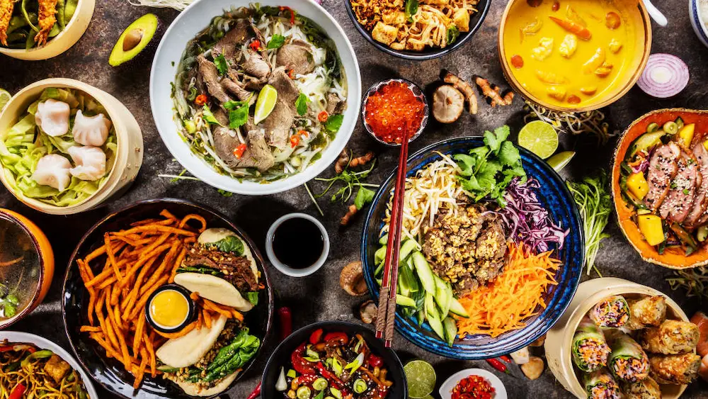
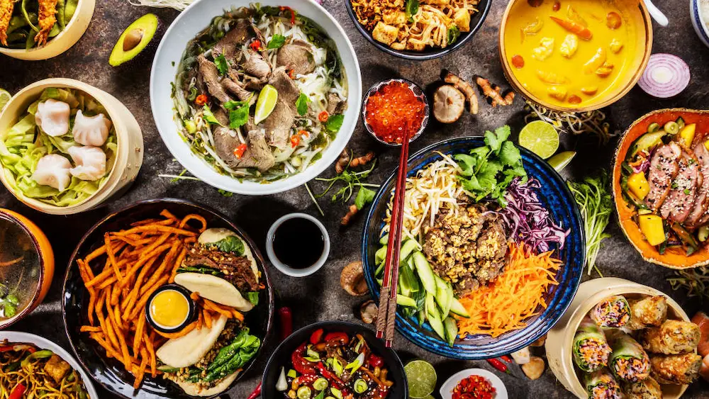

This website will guide you with updated information about each city and top eateries. Whether you're looking for budget-friendly hotels or luxurious accommodations, exploring the best sightseeing areas, or trying the recommended restaurants, Travel Bud has you covered. Our goal is to provide you with the latest insights into each city's unique charm and the best culinary experiences they have to offer.
Find budget-friendly hotels or luxury, explore the best sightseeing areas, and try the recommended restaurants.Travel Bud, we understand that every traveler has unique preferences and budgets. Whether you're seeking budget-friendly accommodation options, indulging in luxury stays, exploring iconic sightseeing areas, or savoring the finest culinary delights, our platform is designed to cater to your diverse travel needs. Discover a world of possibilities with Travel Bud, where your journey is our priority.
Stay Options
- Hotels
- Airbnb
- Camping/Cabins
 
